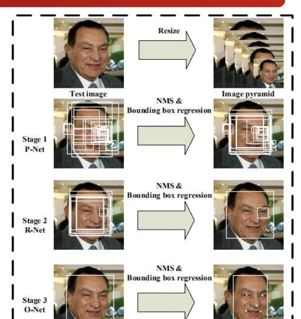
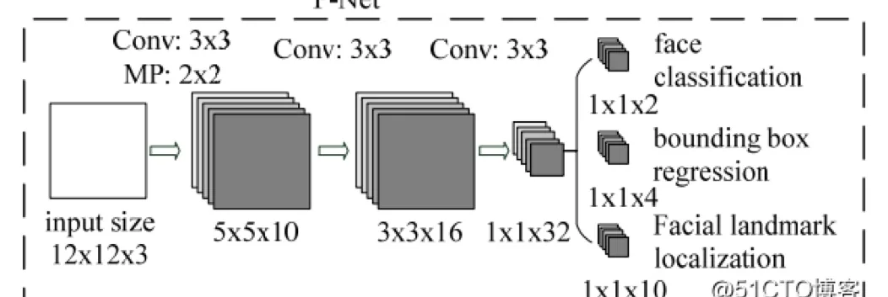
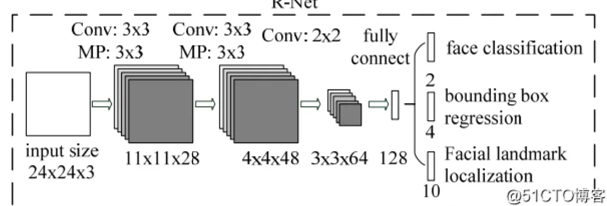
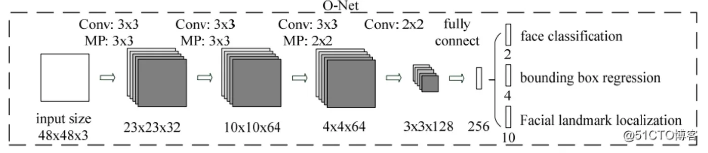
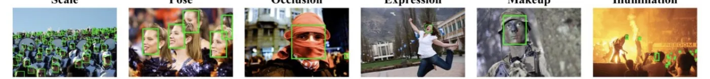
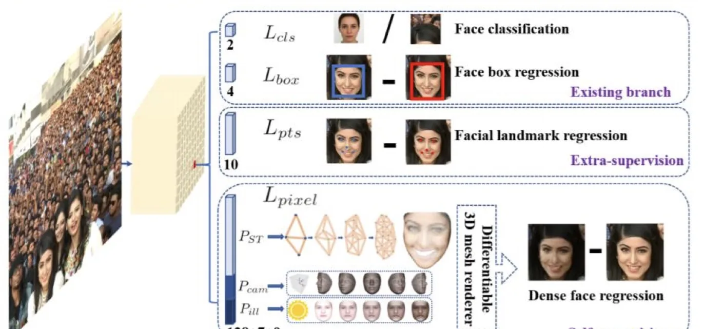
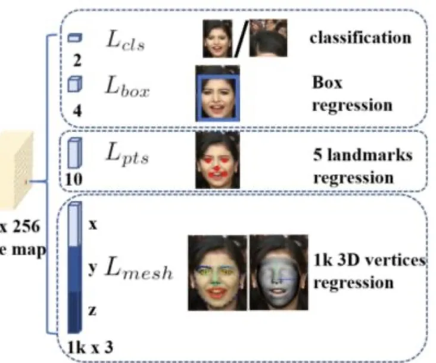
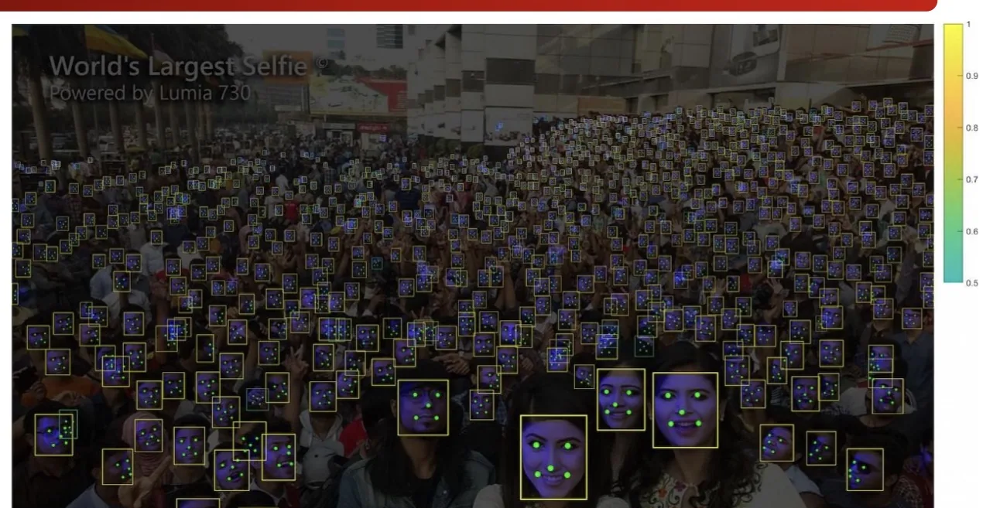

计算机视觉 · 第 8 章 人脸识别
8.5 检测与对齐联合：MTCNN 与 RetinaFace
前面的对齐网络只管关键点，检测框由别人给它。这一节的两个网络换了个思路：检测和对齐本来就是一回事，用一套网络一次输出人脸框和关键点。先看 MTCNN 如何用三级级联把「粗筛到精修」做成流水线，再看 RetinaFace 如何用一次前向的多任务学习，把关键点、三维人脸信息一起预测出来。
1. MTCNN：多任务级联的人脸检测
MTCNN 的做法是基于多任务级联卷积神经网络来解决人脸检测和对齐问题：一套网络同时输出人脸矩形框和关键点坐标，关键点取五个——左眼、右眼、鼻子、嘴巴左上角、嘴巴右上角。
这里「多任务」指的就是分类（是不是人脸）、回归（框在哪）和回归（关键点在哪）三件事一起做。相比「先检测、再单独跑一个关键点网络」的两段式方案，它省掉了一次前向，也避免了两级之间的误差传递。
输入方面，MTCNN 同样要对付尺度问题：为应对目标多尺度问题，将原始图像 resize 到不同尺寸，构建图像金字塔，这样可以更好地检测大小不一的人脸。这与上一节讲的检测流水线是一致的——多尺度靠图像金字塔，不靠改窗口大小。

2. MTCNN 的三个阶段
MTCNN 的名字里「级联」是关键，它的检测过程分三个阶段，网络由浅到深、由粗到精。
（1）第一阶段：P-Net 出候选
通过一个全部由卷积层组成的 CNN，取名 P-Net，获取候选人脸框、关键点坐标和人脸分类（是人脸或不是人脸），之后采用 NMS 过滤掉高重叠率的候选窗口。
注意 P-Net 是全卷积的：卷积层对输入尺寸没有限制，所以它可以一次性在整张特征图上滑动式地给出大量候选框，这正是「快速粗筛」所需要的性质。它的输出只是候选，宁可多报，不能漏掉。

（2）第二阶段：R-Net 精筛
第一阶段输出的候选人脸框作为更复杂的 R-Net 网络的输入，R-Net 进一步筛除大量错误的候选人脸框，同样也通过 NMS 过滤掉高重叠率的候选窗口。
三级的递进是有意设计的：第一级用最便宜的网络砍掉绝大部分背景窗口，第二级用更复杂的网络在这些「有点像脸」的窗口里做精细判断，候选数量逐级减少、每个候选分到的计算量逐级增加——这就是级联的效率来源。

（3）第三阶段：O-Net 出结果
与第二阶段类似，最终网络输出人脸框坐标、关键点坐标和人脸分类。到这一步，网络给出的就是可以直接交给下一环节的结果——框用于裁剪，五个关键点用于对齐。

3. RetinaFace：单阶段、像素级
MTCNN 要跑三级，速度上仍有压力。RetinaFace 走的是另一条路——单阶段。课件列出它的四项主要贡献：
- 手工标注了 Wider Face 数据集上的五个关键点，在 hard face 数据上检测效果改善显著；
- 在已有的监督分支上添加 mesh decoder 分支，预测像素级 3D 人脸信息；
- 使用 MobileNet Backbone 可以在单个 CPU 上实时运行；
- 在 Wider Face 的 hard 级别测试集中，RetinaFace 超出当时 state-of-the-art 1.1%。

这四条贡献分别对应三个方向的改进：数据标注（五个关键点）、监督信号（多了一个 3D 人脸的像素级监督分支）、骨干网络（MobileNet 保证实时）。其中 mesh decoder 最有意思——它不只要求网络知道「关键点在哪」，还要求它理解整张脸的三维结构，这种更强的监督反过来也让二维关键点定位更准。

4. 多任务损失函数
多任务的落地方式是损失函数的相加。RetinaFace 在特征图（W×H×256）上并行引出四个回归/分类分支：分类（classification）、边界框回归（box regression）、五个关键点回归（5 landmarks regression）和 1000 个三维顶点回归（1k 3D vertices regression，即 mesh）。多任务损失就是把它们加权求和：
L = Lcls + λ1 p* Lbox + λ2 p* Lpts + λ3 p* Lmesh
三个回归项前面的 p* 是正样本指示：只有被判定为正样本（确实框住了人脸）的锚框，才计算位置、关键点和三维顶点的回归损失。这是检测类多任务损失的通用写法——分类项对所有锚框都算（要有能力把背景判掉），回归项只对正样本算（背景框没有「正确位置」可回归）。λ1、λ2、λ3 则用来平衡各个任务在总损失中的分量。

5. 效果：一张自拍里的 1151 张人脸
课件用一个很直观的例子展示检测能力：在一张被称为「世界最大自拍」（World's Largest Selfie，由 Lumia 730 拍摄）的照片上，从 1151 张人脸中检测到了 900 张人脸，矩形框的颜色表示对检测结果的置信度。

这个例子同时说明了密集小目标检测的难度：人脸越多、越小、越密集，滑动窗口式的枚举就越容易漏、NMS 也越容易误合并。单阶段检测器之所以能在这类场景上占优，正是因为它把「枚举」交给了密集的锚框，一次前向就覆盖了整张图。
本节小结
- MTCNN（ECCV 2016）用多任务级联卷积网络把检测和对齐一起做，同时输出人脸框和五个关键点（左眼、右眼、鼻子、嘴巴左上角、嘴巴右上角），输入先 resize 成图像金字塔以应对多尺度。
- MTCNN 分三级：P-Net（全卷积，快速出候选，NMS 去重）→ R-Net（更复杂，进一步筛除错误候选）→ O-Net（输出最终的人脸框坐标、关键点坐标和人脸分类）。级联的效率来自「候选逐级减少、单候选算力逐级增加」。
- RetinaFace（CVPR 2020）是单阶段检测器，四项贡献是：标注 Wider Face 五关键点、增加 mesh decoder 分支预测像素级 3D 人脸、用 MobileNet Backbone 在单 CPU 上实时、hard 集上超出当时最优 1.1%。
- 它的多任务损失把分类、框回归、关键点回归、三维顶点回归加权求和，其中三个回归项由正样本指示 p* 门控；在一张 1151 人脸的巨型自拍上检出了 900 张。